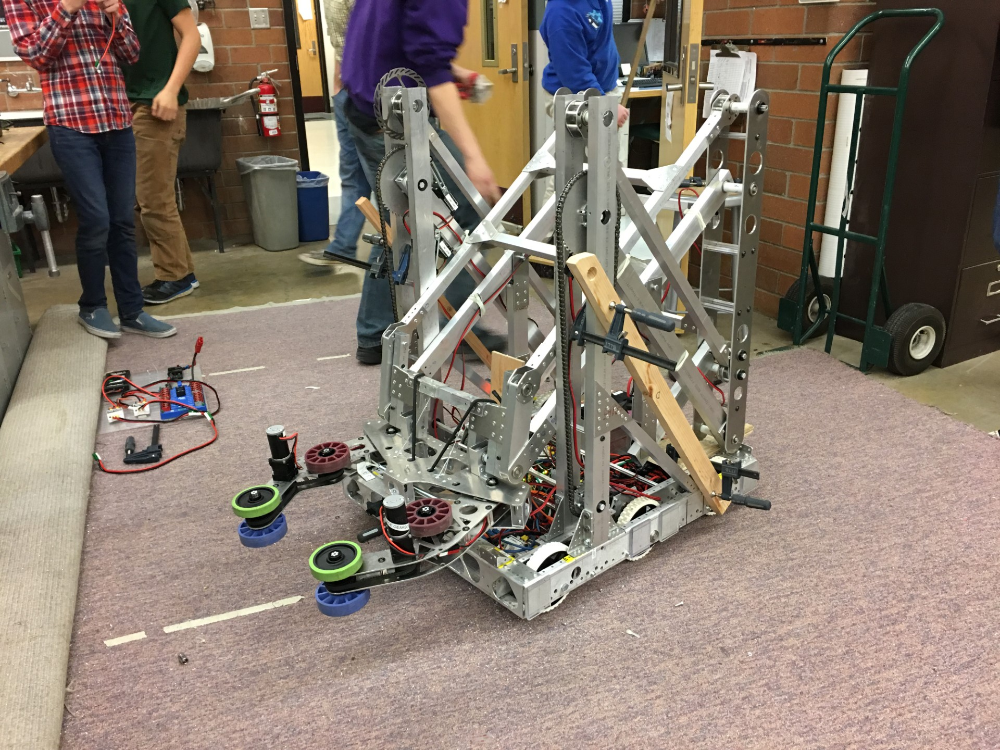

About Me
I have loved computers, data and anything STEM-related all my life. I was playing on the computer at 6 months old, using the trackpad on my grandpa’s laptop when I was almost 2, and built Excel spreadsheets about everything important in my life. I first learned Excel in 4th grade, which I used to analyze all my items and strategies in my video games, keep track of player stats for my fantasy football team, and track when my favorite TV shows came out to schedule out my week. Analyzing data has always been a fascination of mine, and my mind is just built to process large amounts of information. This passion extends to my Christian faith. I love listening to sermons and learning more about the Bible and God. My brain absorbs information and knows how to use it to help myself and others.
One thing about me is that I stutter. Rather than holding me back, I have always used it as a reason to have something to overcome. I am dedicated to being my best self, doing the best job on everything I am tasked to do, and diving into my passions during my free time. I may talk slower than most people, and I’m still in the early-mid stages of my coding and data analyst career, but I dedicate myself fully to everything I do. I’m very excited to be able to use this natural ability and drive to add value to the company I work for and the people around me.
Technology Student Association (TSA)
I first found my passion for STEM at Alderwood Middle School when I got to take technology and engineering electives in middle school and be a part of a club, the Technology Student Association. In class, we got to design items on the laser printer, build a mousetrap car, a robot arm, and many more things. TSA was a way to expand upon that outside of class and compete with others. I competed in 4 events:
- Bridge building
- Solar cars
- CO2 cars
- Careers
The two key events for me were bridge building and solar cars. For bridge building, I built 3x more designs than anyone in the class ever has: 25. I didn’t win this event, but I did place highly. For solar cars, me and my friend Barrett designed a very efficient little solar car with all of the proper documentation to boot, and all of our hard work won us a 1st place plaque! So much of my free time went to TSA, and it was great to see my passions take shape.

Robotics
The next stage of my life into STEM was in our school’s robotics club. TSA was a great precursor to this, and then robotics really let me both expand and hone my skills. Mountlake Terrace High School has a club that is a part of the FIRST Robotics program, the FIRST Robotics Challenge (FRC). In January, you are given a challenge to build a robot for. Then you have 6 weeks to design, prototype, build, and program a robot to be ready for competition.
Everyone got to be part of every phase, and we each also had our specialty roles. One of the great things about FRC is that you have adults mentoring high school students, so we had many parents (including my dad) who were engineers and software developers help us through the process. Going through the robot-building process 4 times taught me so much about the engineering process as well as coding something you can control in the real world. Robots have several sensors that we use to control the robot autonomously or through a remote control.
This entire process was about 20-30 hours per week from January until April, when the finalist worldwide competitions are. I pretty much lived in the school’s shop and got to learn from experts in their field.
Robotics – Competition + Data Analysis
Once the robot was built and it was competition time, a whole new world opened up for me. This was when we would have to tweak our code mid-competition, fix the robot if it broke, and collect data on other teams for the playoffs. Each competition was a busy 3-day event with about 60 teams in the region, and each of the about 120 matches is teams of 3 robots vs. 3 robots.
Aside from being one of the people who were on the field for the competition, I had a critical job for my team’s playoff aspirations. There was even data analysis to be done in robotics. In the playoffs, we got to pick our teams and it was best of 3 matches. It was my job to collect data on all 60+ teams, learn their strengths and weaknesses, calculate offensive and defensive power rankings using matrix algebra, and communicate my findings with both my team and other teams I determined we would best be allied with. This data was also used for our strategizing. Before us, only the best teams in the world were this intricate in their data analysis. I honed my craft over the course of my 4 years, and it really paid off. The first two years we never made it far in the playoffs. However, my junior year we made it to the semifinals once, which allowed us to qualify for the worldwide competition for the first time in team history.
It was a brand-new experience for us to fly to Houston for a week and compete against the best of the best. We didn’t go very far our first year at World’s, but the second year (my senior year), everything fell into place. My data skills were fully-formed, the mentors had been there for 5 years, and the mass of students was in my grade, so this was our chance to knock it out of the park. And we did! We had our best robot that attracted top teams, and I was able to come up with the best teams I wanted. Our team ended up winning state, and taking 4th in the worldwide competition. That year was so much fun, and it was great to see all of our hard work and late nights pay off as well as it did!

NFL Prediction Program (WSSEF)
My senior year I participated in the Washington State Science and Engineering Fair (WSSEF). The goal of this was to be the end result for my senior project. Everyone needed to find a mentor, so I had one of my coding mentors in robotics, Joe, help me design the project. I love football, so I ended up building a program to predict the score of NFL games. I collected every statistic I could get my hands on. Back then I didn’t know machine learning, so I had to research how each stat contributed to the game to build a program to feed all this data through and produce a final score.
In the end, it was between 60 and 93.75% (15/16) correct in choosing the winner, depending how late in the season the games were. More information about the teams each season leads to more accurate predictions. However, more importantly to sports bettors, I tested my program against the spread. It averaged around 53% of picks against the spread. Some of the best websites out there get up to 55%, so I was very happy with this result.
The WSSEF judges and NASA were very impressed with my data analysis skills too. I was awarded first place in the Systems Software category, and NASA awarded me the runner up for the Washington NASA Space Grant Consortium with my work in algorithms. It was very exciting to see my data analysis and algorithms work get this kind of recognition!

|

|

|